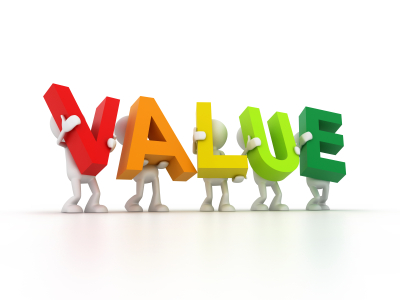

¿Qué tan conveniente es la investigación?, esto es, ¿para qué sirve?
¿Cuál es su relevancia para la sociedad?, ¿quiénes se beneficiarán con los
resultados de la investigación?, ¿de qué modo? En resumen, ¿qué
proyección social tiene?
¿Ayudará a resolver algún problema práctico?, ¿Tiene implicaciones
trascendentales para una amplia gama de problemas prácticos?

Con la investigación, ¿se logrará llenar algún hueco de conocimiento?,
¿se podrán generalizar los resultados a principios más amplios?, ¿la
información que se obtenga puede servir para comentar, desarrollar o
apoyar una teoría?, ¿se podrá conocer en mayor medida el
comportamiento de una o diversas variables o la relación entre ellas?,
¿ofrece la posibilidad de una exploración fructífera de algún fenómeno?,
¿qué se espera saber con los resultados que no se conociera antes?,
¿puede sugerir ideas, recomendaciones o hipótesis a futuros estudios?

La investigación, ¿puede ayudar a crear un nuevo instrumento para
recolectar y/o analizar datos?, ¿ayuda a la definición de un concepto,
variable o relación entre variables?, ¿pueden lograrse con ella mejoras de
la forma de experimentar con una o más variables?, ¿sugiere cómo
estudiar más adecuadamente una población?